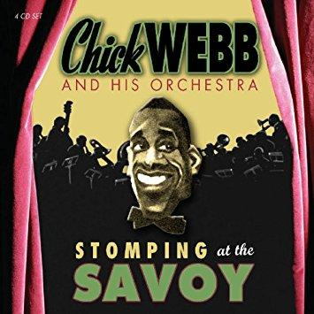

Essays:
Holiday in Harlem

Christmas may be a time for returning home to see family and friends, but not all of us pine for snow-covered hills in the country.
In this song, written by Chick Webb, and sung by Ella Fitzgerald, the singer reveals to us the joys of spending the Christmas season in Harlem, circa 1937.
This is one of those works of art that, for me at least, seems to open some magical door to another time and place, and another culture. The enthusiastic swing of the music, the warm and welcoming voice of Ella Fitzgerald, the images portrayed by the lyrics – all of these make me want to – and briefly feel like I can – step through that door and spend an afternoon in this long-gone world so different from the one I inhabit.
Music, music everywhere,
Happiness is in the air.
Not a soul has got a care:
Holiday in Harlem.Up and down the avenue,
You see faces old and new,
With a smile that welcomes you,
'Cause it’s holiday in Harlem.Sophisticated ladies:
Dizzy, dumb, and wise.
My oh my, when they get high,
There’s danger in their eyes.Not a soul is feelin’ blue,
Up and down the avenue,
With a smile that welcomes you:
Holiday in Harlem.
I’m not sure why this song has been anthologized so infrequently, and rarely if ever covered. I love the lyrics, especially when Ella sings about “sophisticated ladies, dizzy, dumb and wise.” (Then again, I can’t really think of any modern singer who could pull this off the way Ella could.)
I found this recording on a wonderful compilation called Edward Hopper and the Music of New York that was put together for an exhibition of this artist’s work a few years back. The track is available on Apple Music, as part of both Chick Webb and Ella Fitzgerald anthologies. I urge you to seek it out.
Next: “Christmas Night in Harlem”
Or see the complete list of Christmas Favorites from The Practical Utopian.
May 2, 2024